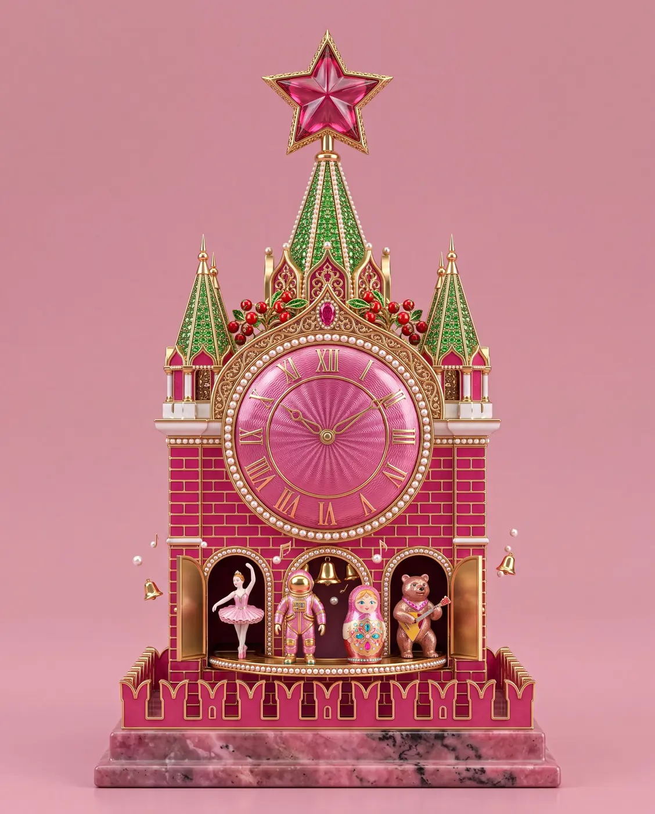
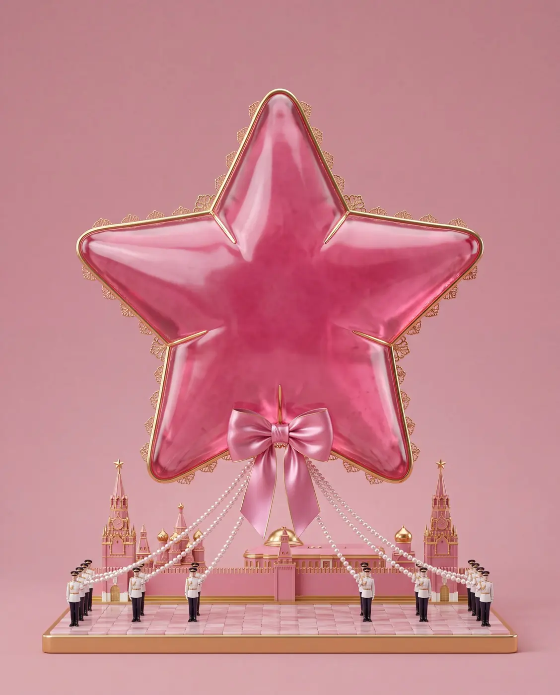
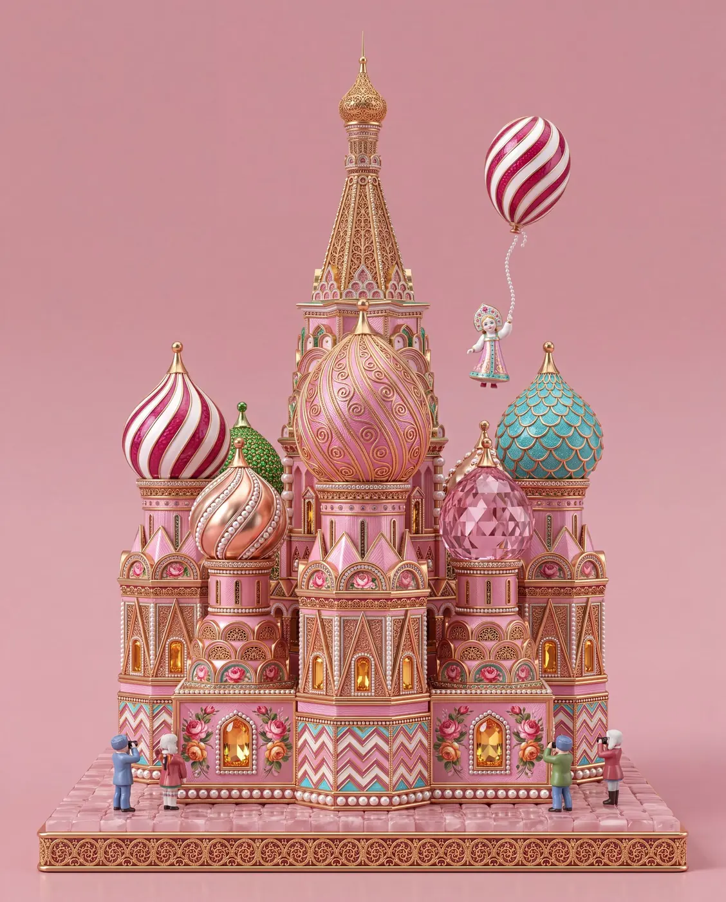

I grew up in Moscow, surrounded by things too big to touch: the Kremlin star, the Tsar Cannon, the horses above the Bolshoi. In this series I made them small enough to keep.
Every symbol becomes a jewel, a clock, a box, something you inherit rather than visit. Russian Code translates the symbols of Moscow, Russian fairy tales and Soviet everyday life into the language of the jewellery workshop: guilloché enamel, hardstone, pearls, crystal, painted porcelain, the vocabulary Fabergé made famous. The Spasskaya Tower turns into a table clock with automaton figures, the Tsar Cannon fires peonies, and Mukhina's Worker and Kolkhoz Woman shrinks to a figurine on a crocheted doily. Folk crafts are the material here, not the decoration: Gzhel brushwork in pink instead of cobalt, a Pavlovo Posad shawl, lace, lacquer miniatures. What interests me is scale: the monumental made intimate, the official made domestic, the fairy tale made precious.


A brand, a city, a family story: any code can become objects like these. Write to me.
Discuss a project →Working worldwide, remotely. Invoicing in USD or EUR.